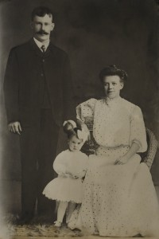

Bjørg Halgerd Johansen
K, #35576, f. 4 januar 1926, d. 27 august 2022
Foreldre
Familie: Jarle Lund Engelsen (f. 18 juli 1915, d. 15 juli 2006)
| Datter | Hildur Engelsen (f. 19 mai 1947, d. 28 juli 2020) |
| Sønn | Brynjar Engelsen+ (f. 16 mai 1951) |
| Sønn | Johan Engelsen+ (f. 2 desember 1960) |
| Sønn | Harald Engelsen (f. 2 desember 1960, d. 12 juni 1976) |
Biografi
Bjørg Halgerd Johansen ble født den 4 januar 1926. Hun giftet seg med
Jarle Lund Engelsen sønn av
Harald Engelsen og
Laura Regine Larsdatter Dufved, i 1946. Bjørg Halgerd Johansen døde den 27 august 2022 Nærøy bo- og behandlingssenter, Kolvereid, Nærøysund, Trøndelag. Hun ble gravlagt den 7 september 2022 Lundring kirkegård, Nærøysund, Trøndelag.
Bjørg Halgerd Johansen was also known as Bjørg Halgerd Engelsen. Hun og
Jarle Lund Engelsen kjøpte i 1946 Varøya 25/15, Varøya, Nærøy, Nord-Trøndelag. Hun kjøpte Haugli 25/55, Varøya, Nærøy, Nord-Trøndelag, og la eiendommen til bnr. 15. Bjørg bodde Kolvereid, Nærøy, Nord-Trøndelag.
| Sist redigert |
31 august 2022 10:24:01 |
| Slektskap | 8-menning 1 gang forskjøvet til Håkon Wahl |
Ole Pedersen
M, #35577, f. 1796
Foreldre
Biografi
Ole Pedersen ble født i 1796 Hundhammer, Nærøy, Nord-Trøndelag. Han giftet seg med
Anne Maria Hallesdatter den 11 januar 1824.
Ole Pedersen var inderst Hundhammer 31/3, Hundhammer, Nærøy, Nord-Trøndelag, mellom 1824 og 1830.
| Sist redigert |
8 desember 2004 00:00:00 |
Anne Maria Hallesdatter
K, #35578, f. 1794
Biografi
| Sist redigert |
8 desember 2004 00:00:00 |
Hildur Engelsen
K, #35579, f. 19 mai 1947, d. 28 juli 2020
Foreldre
Biografi
Hildur Engelsen ble født den 19 mai 1947 Nærøy, Nord-Trøndelag. Hun giftet seg med Jorulf Johan Unkervatn. Hun døde den 28 juli 2020 Hattfjelldal sykehjem. Hun ble gravlagt den 7 august 2020 Hattfjelldal kirkegård, Hattfjelddal, Nordland.
Hildur Engelsen was also known as Hildur Unkervatn. Hun ble konfirmert i 1962 Lundring kirke, Nærøy, Nord-Trøndelag
+. Hildur og Jorulf bodde Hattfjelldal, Nordland.
| Sist redigert |
31 august 2022 10:46:57 |
| Slektskap | 9-menning til Håkon Wahl |
Johannes Arlund Måøy
M, #35580, f. 26 juli 1907, d. 13 mars 1994
Foreldre
Biografi
| Sist redigert |
17 januar 2010 00:00:00 |
Åsta Westgård
K, #35581, f. 19 oktober 1931, d. 25 februar 2019
Foreldre
Biografi
Åsta Westgård ble født den 19 oktober 1931 Selvågen 28/4, Selvågen; Foldereid, Nærøy, Nord-Trøndelag. Hun giftet seg med
Einar Herlof Hansen sønn av
Hans Johansen Varø og
Berit Sofie Tobiasdatter Tyldum. Åsta Westgård døde den 25 februar 2019 Nærøy bo- og behandlingssenter, Kolvereid, Nærøy, Nord-Trøndelag. Hun ble gravlagt den 8 mars 2019 Kolvereid kirkegård, Nærøy, Nord-Trøndelag.
Åsta Westgård was also known as Åsta Hanssen. Hun og
Einar bodde Kolvereid, Nærøy, Nord-Trøndelag.
| Sist redigert |
27 februar 2019 00:00:00 |
Sverre Ottarsen Strand
M, #35582, f. 27 oktober 1919, d. 23 november 2003
Foreldre
Biografi
Sverre Ottarsen Strand ble født den 27 oktober 1919 Kvernvollen 94/6, Grongstad, Høylandet, Nord-Trøndelag. Han døde den 23 november 2003 Høylandet, Nord-Trøndelag. Han ble gravlagt den 28 november 2003 Høylandet kirkegård, Høylandet, Nord-Trøndelag.
Sverre Ottarsen Strand kjøpte den 1 januar 1964 Kvernvollen 94/6, Grongstad, Høylandet, Nord-Trøndelag.
| Sist redigert |
6 oktober 2025 22:27:55 |
| Slektskap | 7-menning 2 ganger forskjøvet til Håkon Wahl |
Bertha Mathilde Hansen
K, #35583, f. 9 desember 1882, d. 10 februar 1933
Foreldre

Peder, Bertha og Hjørdis Paulsen
Biografi
Bertha Mathilde Hansen ble født den 9 desember 1882 Kristiania. Hun giftet seg med
Peder Einar Josef Paulsen den 16 november 1902 Jacob prestegjeld, Oslo. Hun døde den 10 februar 1933 Racine, Racine County, Wisconsin, USA. Hun ble gravlagt Mound Cemetery, Racine, Racine County, Wisconsin, USA.
Bertha Mathilde Hansen was also known as Bertha Mathilde Paulsen. Hun og
Peder bodde Sverresgd. 21 L, Oslo. Hun utvandret til Wisconsin, USA, den 13 april 1906 sammen med
Peder Einar Josef Paulsen. Bertha og
Peder bodde Racine, Racine County, Wisconsin, USA.
| Sist redigert |
21 juni 2026 10:09:09 |
Nils Eriksen Vestgård
M, #35584, f. før 1796
Biografi
Nils Eriksen Vestgård ble født før 1796.
| Sist redigert |
17 desember 2004 00:00:00 |
Nichlet Buchholdt
M, #35585, f. 10 september 1899, d. 1 april 1979
Foreldre
Biografi
Nichlet Buchholdt ble født den 10 september 1899 Stor-Elvdal, Hedmark. Han giftet seg med
Bergljot Hovland. Han døde den 1 april 1979. Han ble gravlagt Koppang kirkegård, Stor-Elvdal, Hedmark.
| Sist redigert |
7 november 2014 00:00:00 |
| Slektskap | 4-menning 1 gang forskjøvet til Håkon Wahl |
Halvdan Olav Ludvigsen Mevassvik
M, #35586, f. 11 april 1906, d. 19 november 1976
Foreldre
| Datter | Jorid Mevassvik+ (f. 10 august 1938) |
Biografi
Halvdan Olav Ludvigsen Mevassvik kjøpte i 1933 Mevassvik 93/2;3, Eid, Høylandet, Nord-Trøndelag.
| Sist redigert |
23 mars 2023 15:36:47 |
| Slektskap | 7-menning 2 ganger forskjøvet til Håkon Wahl |
Ola Edvind Ludvigsen Mevassvik
M, #35587, f. 12 august 1908, d. 20 februar 1991
Foreldre
Biografi
Ola Edvind Ludvigsen Mevassvik og
Jenny bodde Skogmo, Overhalla, Nord-Trøndelag. Han kjøpte i 1945 Sagvoll 63/21, Skogmo store, Overhalla, Nord-Trøndelag.
| Sist redigert |
12 august 2025 23:52:09 |
| Slektskap | 7-menning 2 ganger forskjøvet til Håkon Wahl |
Ellen Birgitte Ludvigsen Mevassvik
K, #35588, f. 18 januar 1910, d. 5 november 1972
Foreldre
Biografi
Ellen Birgitte Ludvigsen Mevassvik ble født den 18 januar 1910. Hun døde den 5 november 1972.
Ellen Birgitte Ludvigsen Mevassvik var ikke gift.
| Sist redigert |
11 april 2013 00:00:00 |
| Slektskap | 7-menning 2 ganger forskjøvet til Håkon Wahl |
Ivar Severin Ludvigsen Mevassvik
M, #35589, f. 16 oktober 1911, d. 28 august 1997
Foreldre
Familie: Inga Johanne Indermo (f. 4 oktober 1912, d. 20 september 2006)
| Datter | Erna Mevassvik (f. 14 mai 1935, d. 19 desember 2021) |
| Sønn | Eilif Mevassvik (f. 1 juli 1938, d. 9 mai 2000) |
| Datter | Marit Mevassvik (f. 13 mai 1943) |
| Datter | Lenny Mevassvik+ (f. 15 juni 1947) |
| Datter | Inger Mevassvik+ (f. 8 desember 1950) |
Biografi
Ivar Severin Ludvigsen Mevassvik ble født den 16 oktober 1911 Høylandet, Nord-Trøndelag. Han giftet seg med
Inga Johanne Indermo datter av
Emil Ingvald Indermo og
Marianne Oline Lein, i 1935. Ivar Severin Ludvigsen Mevassvik døde den 28 august 1997 Namsos, Nord-Trøndelag. Han ble gravlagt den 5 september 1997 Drageid kirkegård, Høylandet, Nord-Trøndelag.
Ivar Severin Ludvigsen Mevassvik var skogsarbeider. Han kjøpte i 1937 Mevassvik nordre 93/25, Eid, Høylandet, Nord-Trøndelag.
| Sist redigert |
24 november 2025 07:31:41 |
| Slektskap | 7-menning 2 ganger forskjøvet til Håkon Wahl |
Elias Ludvigsen Mevassvik
M, #35590, f. 29 juni 1914, d. 9 april 1994
Foreldre
| Datter | Bjørg Johanne Mevassvik+ (f. 27 september 1941) |
| Sønn | Lennart Eilif Mevassvik+ (f. 24 august 1945) |
Biografi
Elias Ludvigsen Mevassvik forpaktet Åvatsmark 90/1-2, Aavatsmark, Høylandet, Nord-Trøndelag.
| Sist redigert |
10 juli 2022 17:13:37 |
| Slektskap | 7-menning 2 ganger forskjøvet til Håkon Wahl |
Olea Ludvigsen Mevassvik
K, #35591, f. 16 juni 1918, d. 15 november 1992
Foreldre
| Sønn | Magne Grongstad+ (f. 23 januar 1942) |
| Datter | Jorun Elsa Grongstad (f. 16 april 1944, d. 20 april 2004) |
| Sønn | Lars Grongstad (f. 13 november 1946) |
| Sønn | Oddvar Grongstad (f. 15 mars 1957, d. 30 mars 1993) |
Biografi
Olea Ludvigsen Mevassvik was also known as Olea Ludvigsen Grongstad.
| Sist redigert |
18 april 2013 00:00:00 |
| Slektskap | 7-menning 2 ganger forskjøvet til Håkon Wahl |
Brede Olsen Grongstad
M, #35592, f. 24 september 1883, d. 27 august 1951
Foreldre
Biografi
| Sist redigert |
14 april 2013 00:00:00 |
| Slektskap | 6-menning 3 ganger forskjøvet til Håkon Wahl |
Lina Petrine Kristiansdatter Lande
K, #35593, f. 5 september 1888, d. 24 mars 1948
Foreldre
Biografi
Lina Petrine Kristiansdatter Lande ble født den 5 september 1888 Lande, Bindal, Nordland. Hun giftet seg med
Brede Olsen Grongstad sønn av
Ole Johnsen Grongstad og
Ellen Eliasdatter Grongstad. Lina Petrine Kristiansdatter Lande døde den 24 mars 1948 Overhalla, Nord-Trøndelag. Hun ble gravlagt den 3 april 1948 Ranem kirkegård, Overhalla, Nord-Trøndelag.
Lina Petrine Kristiansdatter Lande was also known as Dina Lande.
| Sist redigert |
14 april 2013 00:00:00 |
Elfrid Bredesen Grongstad
K, #35594, f. 2 juli 1915, d. 18 februar 1981
Foreldre
Biografi
Elfrid Bredesen Grongstad ble født den 2 juli 1915. Hun døde den 18 februar 1981 Overhalla, Nord-Trøndelag. Hun ble gravlagt den 24 februar 1981 Ranem kirkegård, Overhalla, Nord-Trøndelag.
Elfrid Bredesen Grongstad var ikke gift.
| Sist redigert |
14 april 2013 00:00:00 |
| Slektskap | 7-menning 2 ganger forskjøvet til Håkon Wahl |
Elias Bredesen Grongstad
M, #35595, f. 5 mars 1911, d. 21 september 1975
Foreldre
Familie: Anna Sofie Bjørnseth (f. 26 oktober 1912, d. 14 februar 2005)
| Datter | Anne Lise Grongstad (f. 16 november 1944) |
Biografi
Elias Bredesen Grongstad ble født den 5 mars 1911 Bindal, Nordland. Han giftet seg med
Anna Sofie Bjørnseth datter av
Ingeman Bjørnseth og
Johanna Marie Bjørnes. Elias Bredesen Grongstad døde den 21 september 1975 Overhalla, Nord-Trøndelag. Han ble gravlagt den 26 september 1975 Ranem kirkegård, Overhalla, Nord-Trøndelag.
Elias Bredesen Grongstad kjøpte i 1940 Barlien 42/3, Barlien, Overhalla, Nord-Trøndelag.
| Sist redigert |
14 april 2013 00:00:00 |
| Slektskap | 7-menning 2 ganger forskjøvet til Håkon Wahl |
Kristian Mathias Petersen Lande
M, #35596, f. 1 september 1847
Foreldre
Biografi
| Sist redigert |
4 januar 2005 00:00:00 |
Anne Christine Brun Iversdatter Skauvik
K, #35597, f. 5 august 1853
Foreldre
Biografi
| Sist redigert |
4 januar 2005 00:00:00 |
Peter Manasses Lande
M, #35598, f. 20 november 1828, d. 28 desember 1907
Foreldre
Biografi
Peter Manasses Lande ble født den 20 november 1828 Øyen, Bindal, Nordland. Han giftet seg med
Doreth Kristine Olsdatter datter av
Ole Christiansen, den 1 juli 1847 Vassås kirke, Bindal, Nordland. Peter Manasses Lande døde den 28 desember 1907 Helstad, Bindal, Nordland. Han ble gravlagt Vassås kirkegård, Bindal, Nordland.
| Sist redigert |
12 januar 2026 00:20:15 |
Doreth Kristine Olsdatter
K, #35599, f. omtrent 1825
Foreldre
Biografi
| Sist redigert |
12 januar 2026 00:20:26 |
Ole Christiansen
M, #35600, f. før 1807
Biografi
Ole Christiansen ble født før 1807.
| Sist redigert |
4 januar 2005 00:00:00 |
{kind=link}